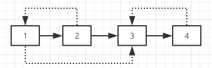
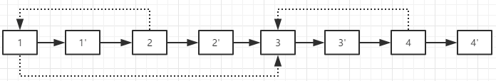
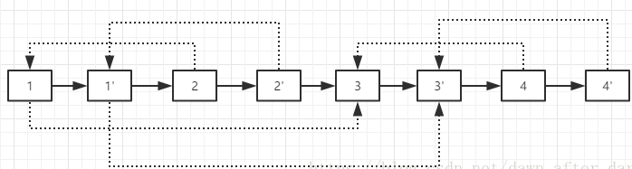
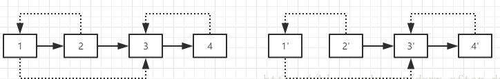

原文连接:https://www.cnblogs.com/wxwhnu/p/11413558.html
1 题目描述
2 思路和方法
考察链表的遍历知识，和对链表中添加节点细节的考察。 同时也考察了对于复杂问题的划分为多个子问题的能力，复杂问题划分为子问题来做。

其中实现代表next域，即1->2->3->4为最常见的链表形式。而虚线则代表了特殊指针，可以指向任意节点（包括自身和null)。比如1的特殊指针指向3,2的特殊指针指向1，3的特殊指针指向null，4的特殊指针也指向3。
思路：利用next域复制原链表的时候，把每一个节点的副本都连接在该节点的后面，这样我们也可以在O(1)的时间内查找到random域位置。
方法：比如我们把上图按这样的方式复制链表为：

然后我们为复制的每一节点初始化其random域，比如4的random域为3，那么4’的random域为3’，这样可以通过3.next直接得到了3’的位置，同理对其他节点也是这样处理，得到：

最后一步就是拆分这个链表得到原链表和复制链表，原链表的节点都处于奇数位置，复制链表的节点都处于偶数位置。拆分如下：

步骤：
第一步，依然根据原始链表的的每个节点N创建对应的N’，这一次，我们把N‘连接在N的后面；
第二步，设置复制出来的节点的random。假设原来链表上的N的random指向S，那么其对应的复制出来的N‘指向N的random的下一个节点S‘；
第三步，把这个长链表拆分为两个链表：把奇数位置的节点用next连接起来就是原始链表，把偶数位置的节点用next连接起来就是复制的链表。
3 C++核心代码


1 /*
2 struct RandomListNode {
3 int label;
4 struct RandomListNode *next, *random;
5 RandomListNode(int x) :
6 label(x), next(NULL), random(NULL) {
7 }
8 };
9 */
10 class Solution {
11 public:
12 RandomListNode* Clone(RandomListNode* pHead)
13 {
14 if(pHead==NULL)
15 return NULL;
16 RandomListNode* cur; //两个链表节点指针
17 cur = pHead;
18 while(cur){
19 RandomListNode* node = new RandomListNode(cur->label); //复制头指针
20 node->next = cur->next;
21 cur->next = node;
22 cur = node->next;
23 } //新链表和旧链表链接：A->A'->B->B'->C->C'
24 cur = pHead;
25 RandomListNode* p;
26 while(cur){
27 p = cur->next;
28 if(cur->random)
29 p->random = cur->random->next; //关键
30 cur = p->next;
31 }
32 RandomListNode* temp;
33 RandomListNode* phead = pHead->next;
34 cur = pHead;
35 while(cur->next){
36 temp = cur->next;
37 cur->next = temp->next;
38 cur = temp;
39 }
40 return phead;
41 }
42 };4 C++完整代码
1 // 剑指offer 面试题26 复杂链表的复制
2 #include <iostream>
3 using namespace std;
4
5 struct ComplexListNode
6 {
7 int m_nValue;
8 ComplexListNode* m_pNext;
9 ComplexListNode* m_pSibling;
10
11 ComplexListNode(){ m_nValue = 0; m_pNext = NULL; m_pSibling = NULL; }
12 ComplexListNode(int value){ m_nValue = value; m_pNext = NULL; m_pSibling = NULL; }
13
14 };
15
16 /*不借助辅助空间的情况下实现O(n)的时间效率*/
17
18 // 第一步，根据原始链表的每个节点N，复制出N'，把N'链接在对应的N后面
19 void CloneNodes(ComplexListNode* pHead)
20 {
21 ComplexListNode* pNode = pHead;
22 while (pNode)
23 {
24 ComplexListNode* pCloned = new ComplexListNode();
25 pCloned->m_nValue = pNode->m_nValue;
26 // 先保存原来的N节点的next指针
27 pCloned->m_pNext = pNode->m_pNext;
28 // 不复制sibling指针
29 pCloned->m_pSibling = NULL;
30 pNode->m_pNext = pCloned;
31 pNode = pCloned->m_pNext;
32 }
33 }
34
35 // 第二步，设置复制出来的节点的sibling指针
36 // 若原始链表上的N的sibling指针指向S，则复制出来的N指向S的next指向的节点S'
37 void ConnectSiblingNodes(ComplexListNode* pHead)
38 {
39 ComplexListNode* pNode = pHead;
40 while (pNode)
41 {
42 ComplexListNode* pCloned = pNode->m_pNext;
43 if (pNode->m_pSibling)
44 {
45 pCloned->m_pSibling = pNode->m_pSibling->m_pNext;
46 }
47 pNode = pCloned->m_pNext;
48 }
49 }
50
51 // 第3步，拆分链表，奇数位置的节点用next连接起来就是原始链表
52 // 偶数位置的节点用next链接起来就是复制出来的链表。
53
54 ComplexListNode* ReconnectNodes(ComplexListNode* pHead)
55 {
56 // 用于返回
57 ComplexListNode* pClonedHead = NULL;
58
59 ComplexListNode* pNode = pHead;
60 ComplexListNode* pClonedNode = NULL;
61
62 if (pNode)
63 {
64 // 找到复制的链表头，更新当前复制链表节点
65 pClonedHead = pClonedNode = pNode->m_pNext;
66
67 // 重连原始链表，更新当前原始链表节点
68 pNode->m_pNext = pClonedNode->m_pNext;
69 pNode = pNode->m_pNext;
70 }
71
72 while (pNode)
73 {
74 pClonedNode->m_pNext = pNode->m_pNext;
75 pClonedNode = pClonedNode->m_pNext;
76 pNode->m_pNext = pClonedNode->m_pNext;
77 pNode = pNode->m_pNext;
78 }
79 return pClonedHead;
80
81 }
82
83 ComplexListNode* clone(ComplexListNode* pHead)
84 {
85 CloneNodes(pHead);
86 ConnectSiblingNodes(pHead);
87 return ReconnectNodes(pHead);
88 }
89
90
91 int main()
92 {
93 ComplexListNode* p1 = new ComplexListNode(7);
94 ComplexListNode* p2 = new ComplexListNode(2);
95 ComplexListNode* p3 = new ComplexListNode(3);
96 ComplexListNode* p4 = new ComplexListNode(4);
97 ComplexListNode* p5 = new ComplexListNode(5);
98 p1->m_pSibling = p3;
99 p2->m_pSibling = p5;
100 p4->m_pSibling = p2;
101 p1->m_pNext = p2;
102 p2->m_pNext = p3;
103 p3->m_pNext = p4;
104 p4->m_pNext = p5;
105
106 ComplexListNode* pClonedList = clone(p1);
107 cout << pClonedList->m_nValue << endl;
108
109
110 system("pause");
111 return 0;
112 }参考资料
https://blog.csdn.net/dawn_after_dark/article/details/80979501
https://blog.csdn.net/qq_33575542/article/details/80801610